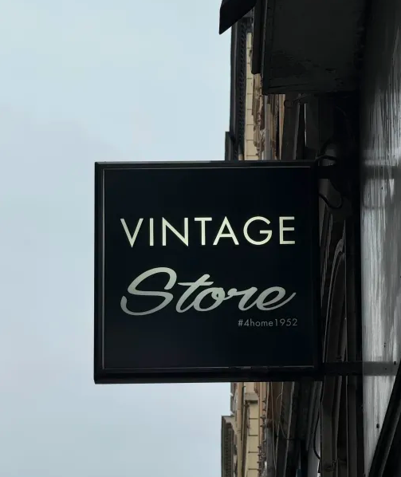

Chaque recoin du Vintage Store raconte une histoire. Loin d’un simple dépôt-vente, la boutique est pensée comme un lieu de découverte, où la seconde main rime avec style et émotion. Vaisselle, bibelots, mobilier… tout est accessible, mais rien n’est banal. Grâce à l’œil averti de Jean Philippault, chaque objet est mis en valeur dans un esprit chaleureux, entre authenticité et esthétique. Le Vintage Store, c’est la preuve que le beau peut être proche, accessible et porteur de sens.
Le Vintage Store est né en 2020, au cœur du 6e arrondissement de Lyon, quartier où Jean Philippault réside depuis plus de 17 ans. L’idée lui est venue d’une remarque entendue à de nombreuses reprises lorsqu’il exposait aux Puces du Canal : « C’est trop loin, je n’y vais jamais. » Il décide alors d’amener l’âme et l’esprit des Puces en centre-ville. Sa boutique, à taille humaine et pleine de charme, propose un univers unique : on y trouve aussi bien des commodes chinées à 300 euros que des objets du quotidien à partir de cinq euros. Tout y est soigneusement choisi et mis en scène pour offrir aux visiteurs une véritable expérience.
Jean Philippault est bien plus qu’un gérant de boutique : il est un véritable passionné de décoration, de mobilier ancien et de belles histoires. Ancien exposant aux Puces du Canal à Villeurbanne, il connaît parfaitement le monde de la seconde main et les trésors qu’il peut receler. Décorateur d’intérieur, organisateur de mises en scène pour des événements (home staging), il sélectionne lui-même chaque pièce, toujours guidé par ses coups de cœur. Sa philosophie est simple : « Je prends seulement des objets qui m’intéressent personnellement, car quand on n’aime pas nous-mêmes un article, il est impossible de le vendre. »